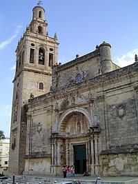
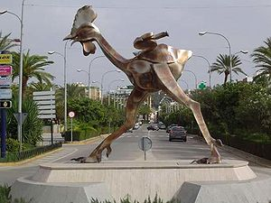

Morón de la Frontera
 De: La Frikipedia, la enciclopedia extremadamente seria.
De: La Frikipedia, la enciclopedia extremadamente seria.
| De la serie ciudades del mundo:
|
| Morón de la Frontera
|
|
|
|
| (Bandera)
|
(Escudo de armas)
|
|
| Topónimo oficial
|
Morón o Arunci
|
| País
|
España
|
| Código postal
|
Cuarenta y un mil y pico
|
| Superficie
|
Tortura de gordos, es decir, llena de cuestas
|
| Altitud
|
Según un fumao, cerca de la Luna
|
| Distancia
|
A 1 kilómetro de cualquier bar
|
| Fundación
|
Es más vieja que mear antes de acostarse
|
| Población
|
30.000 habitantes
|
| Gentilicio
|
Moronense, moronero o aruncitano
|
| Alcalde
|
Juan Manuel Rodrígez (PSOE)
|
Bonita ciudad de unos 30.000 habitantes situada semiliteralmente en medio del campo, aunque los últimos exploradores que envió el alcalde dicen que posiblemente forme parte de la provincia de Sevilla. Los señores que nos traen la cerveza cruzcampo se niegan a darnos datos.
El lugar perfecto para beber
un litro junto a tus colegas. Y es que siempre hay
buen rollo en Morón, cuando hay un litro de por medio.
Morón de la Frontera también es el pueblo con más bares por habitantes (unos tres por cabeza), formando uno de los pilares básicos de la Cruzcampo, a cuya fábrica los moronenses deben peregrinar al menos una vez en la vida. Los más fieles a la diosa cerveza rezan en dirección a dicha fábrica.
Sus habitantes cuentan con un lenguaje propio, el "andaluz basto" y no hablan, sino que realizan atentados fonéticos.
También es sabido que Morón sin acento significa "imbécil", así que no es de extrañar que tres o cuatro guiris procedente de la base aérea estadounidense, tras leer su pequeño diccionario "ingles-español" te llame imbécil si paseas por nuestras calles. Despues nos vengamos cobrandoles las Cocacolas a 5 leros.
Vías de comunicación
Las únicas vías de comunicación con las que cuenta nuestra ciudad son:
- La carretera hacia las Tierras de Arahal: Transitada obligatoriamente por varios viejos con mobiletes del año 235 a. C. (antes de los Canis), tres tractores y un camión lleno de pollos.
- La carretera de la base aérea estadounidense: Donde George W. Bush guarda sus juguetitos nucleares, por miedo a que estayen en EE.UU... que gracioso. Nadie se queja, pues Morón todavía no ha caído ante el neoimperialismo cani, y se cree que es debido a la radiación (como buenos animales, los canis detectan el peligro). Según palabras textuales de un habitante de Morón de la Frontera orgulloso de la ausencia de canis en su ciudad: “Vale, bebo agua contaminada… pero nadie me pide lerus y mucho menos tabaco".
- Carril hacia el Reino de Coripe.
- "Arroyo la peste”: Todos los intrépidos marineros que se han aventurado a navegar por el, no han conseguido llegar muy lejos. Tranquilo, no han muerto, es solo que tiene un palmo de agua.
Historia
Hipótesis sobre su origen
 Piedra de Morón en forma de iglesia. Al verla, los capillitas llorarán y los rojos la querrán quemar.
Morón de la Frontera, ciudad de capillitas.
Existen varias teorías al respecto:
- La historia de Morón de la Frontera, gira en torno las piedras (principal arma histórica del ejército español).
- Las mujeres serían la segunda causa de la fundación de Morón, palabras textuales del representante de Julio Cesar en Andalucía mientras fundaba Morón de la Frontera: "Vine, vi y... ¡coño como está la morena! te voy a poné un piso si te vieneh'a mi tienda, ¡niñaaaa...!" ese piso fue el inicio de Morón.
- Una última teoría sugiere que alguien construyó un bar en medio de la nada y en poco tiempo se rodeo de casas, formando esta bonita ciudad y justificando nuestro eterno agradecimiento a los bares.
Épocas históricas
- Prehistoria: Se han encontrado numerosas obras de arte de esta época, en concreto menhires (tres piedras jincas en el suelo) y dibujos de piedras.
- Época romana: Los romanos la fundaron para extraer el mármol con el que esculpir sus esculturas de mujeres desnudas (véase porno cuando no existia el eMule) y para construir sus numerosos valnearios (léase váteres grandes). Incluso Julio César estuvo aquí (verídico).
- Época árabe: Más tarde, los moros conquistaron España, construyeron un castillito en Morón y empezaron a recoger nuestras piedras para apedrear a las mujeres árabes que por error enseñaban un tobillo o media cara.
- La Reconquista: Hasta que Isabel y Fernando (calzonazos o perrito faldero in extremis) decidieron apedrear a los moros, obviamente con piedras recogidas de Morón, para expulsarles de España y contentar así a los fachas.
- Enculamiento napoleónico: Tras conquistar Napoleón casi toda España, su hermano Pepe Botella acude a nuestro castillo creyendo que era un bar y al no encontrar ni gota de alcohol, enfurece y decide petarlo. Los moronenses enojados, empiezan a exportar piedras picuas que se convertirían en el arma reglamentaria del ejército español junto con el trabuco "currojimenaceo". El general Espartero estuvo personalmente aquí con el fin de recoger piedras para su ejército.
- Actualidad: Actualmente ejercemos un notable dominio sobre los pueblos de alrededor, ya que todas las poblaciones de la zona tienen construida en sus alrededores una chimenea, que son claramente un símbolo fálico (fálico: relativo a las pollas, ¡inculto/a!) y la de Morón es la más grande. Es decir, tenemos la chimenea más grande, demostrándoles a los demás quien es el que manda. En 1958, Coripe y Utrera se sublevan ante el dominio moronense, teniendo la ciudad que mandar un ejercito para sofocar la revuelta. Dicho ejercito jamás regreso, pero como en Coripe son cuatro gatos y un viejo tocando una harmónica, no nos hemos vuelto a preocupar y Utrera ya tiene la chimenea mas grande que nosotros (además de cientos de canis invadiendo sus calles).
Barrios ilustres
Destacan la Alameda o "pijópolis", el Rancho, el barrio Santa María, el Pantano y el centro entre otros. Se está creando un nuevo barrio a las afueras donde adoran al mítico pollo (gallosaurio para algunos) y está liderado por gente como Juan Rafael y Alfonzo Angulo, que a veces se fusionan convirtiendose en la misma persona.
El Centro
Ayuntamiento de Morón, 11 A.M. Hora Zulú. "Shhh... la Virgen trabaja por sus convecinos."
Algo tendría que tener para atar a sus ciudadanos.
Para comprobar la extensión del centro, debemos situarnos en la Plaza del Ayuntamiento y seguir el olor a taco de billetes hasta que lo perdamos o disminuya a clase media u obrera. De este modo, podríamos decir que la Alameda es una especie de extensión del centro, tomando como nexo la C/Utrera. No obstante, aquí vamos a estudiar dichos núcleos burgueses por separado, pues hay varias diferencias entre sus gentes. Por ejemplo, si los de la Alameda son modernillos, los del centro son vanguardistas, si los de la Alameda tienen hijos, los del centro tienen descendencia, etc. percibiéndose matices distintos entre las dos clases. En esta zona encontramos:
- El Ayuntamiento: Desde el palacio del pueblo, la Virgen María Auxiliadora, mediante su representante aquí en el mundo terrenal, gobierna y coordina la vida de sus humildes y fieles siervos. Ésto es debido a que hace escasos años se celebraron en el pueblo unas fiestas medievales, cosa que en teoría solo debía durar unos días, pero tanto le gusto la cultura medieval al Alcalde que decidió retroceder al s. XVII durante un par de años, declarando a la Virgen María alcaldesa honoraria del pueblo e instaurando así una Teocracia en toda regla. Curioso que de todos los ámbitos de la cultura medieval: vestimentas, gastronomía, trabajo, etc., el Alcalde solo se quedase con el tipo de gobierno y, o, u sistema de legitimación del poder (aunque mejor eso, que vestirnos todos de campesinos, bufones, nobles y reyes). De esto, a los feudos, a quemar a los concejales de IU en la plaza del pueblo y gritar ¡herejía! cuando se enciendan las farolas... hay un paso. Lo más preocupante, es que este fenómeno puede extenderse, creando el peligro de que cada nuevo alcalde proclame alcalde honorario a un elemento o personaje de la cultura o los gustos de su propio grupo social. ¿Qué será lo próximo? ¿Un alcalde friki y Spiderman alcalde honorario de Morón? ¡Que desagradable! por favor... todos preferimos a Batman.
- Supercienes: Red de locales pertenecientes al sector terciario con ciertos matices mafiosos, regentados obligatoriamente por uno o varios extranjeros, preferentemente árabes o asiáticos. Muchos moronenses intentaron combatir en esta cruenta batalla, pero fracasaron estrepitosamente en el intento (recordemos aquí a algunos caídos como son el Domti u otros locales de cuyo nombre ningún moronés quiere acordarse). Continuando con lo anteriormente dicho, esta red está dividida en dos facciones enfrentadas a muerte: la árabe y la china. Ambas luchan incesantemente por atraer adeptos consumidores que dejen la mitad de sus sueldos mediante la compra de miles de objetos inútiles y de baja calidad, como son juguetes variados, maquillaje cuasivenenoso, ficticias fiambreras y tapers herméticos, etc. Los supercienes árabes o bazares cuentan con la ventaja del lema "Bueno, Bonito y Barato", que atrae a las marujas cual luz brillante a los mosquitos y las tiendas chinas cuentan con la reproducción a lo conejo y la superioridad numérica, que les permiten tener abierta sus tiendas durante 42 horas al día.
- Calle Nueva y Pozo Nuevo: Son las principales vías del centro, llamadas así por ser el lugar donde antiguamente iban a beber las bestias (antiguamente no había animales ni ganado, sino bestias). Como es lógico, están llenas de todo tipo de comercios, marujas haciendo la compra y criticando, bares, pijos, tiendas de ropa y complementos para pijos, destacando aquí el Estrafalarius o Stradivarius, centro de reunión para niñas consumistas que hacen girar la maquinaria del capitalismo gracias a la compra masiva o al por mayor de prendas, ect. Como en cualquier pueblo, en el centro de Morón también podemos encontrar al trió compuesto por: el tonto del pueblo, el gay del pueblo y el mendigo borracho del pueblo, los cuales se pasean día a día por las principales calles del centro, el primero saludando y haciendo preguntas tontas o pidiendo cigarros a sus convecinos, el segundo, abrazando y besando a todo ser que mida más de 1'70 y el tercero insultando y asustando a las marujas y a los niños. Actualmente también se pueden ver numerosos chinos. Éstos, al ser numerosos y similares desde el punto de vista físico, pueden hacer que creas que has sufrido un déjà vu al ver a más de uno mientras caminas por la misma calle y que en consecuencia te vayas a tu casa asustado por el fantasma de la paranoia y la esquizofrenia.
- Teatro Oriente: Antiguo edificio que hacía de teatro y cine para sus vecinos, restaurado recientemente con el fin de entretener y culturizar al sector social maruja con diferentes actuaciones musicales y obras de teatro.
La Alameda o "Pijópolis"
 El gallo de la Alameda, les recuerda a los
pijos su posición respecto a los gitanos en las peleas
discotequeras.
Entre los ciudadanos de la Alameda, se encuentra la elite social del pueblo, es decir los pijos. Gente refinada y de los más exquisitos modales, aunque recientes estudios cientificos llevados a cabo por la Paca confirman que los pijos de la Alameda eructan, follan e incluso cagan. Malas lenguas acusan a los pijos de la Alameda de alimentarse de sopita de sobre o Avecrem, porque según ellos se han gastado todos los leros en sus grandes casas. Los pijos creen que hay que estar vacunados para salir a otras partes del pueblo y como no, temen a los gitanos y kinkis como si del demonio se tratasen y eso que ellos aun pareciendo inocentes, llegan beber su propio peso corporal en alcohol en una sola noche y otros incluso llegan a liar porros con una mano.
Habitantes
- Pijas varias.
- Pijos.
- La Paca.
- Médicos y abogados.
- Médicos pijos.
- Burgueses.
- Abogados pijos.
- Pijas pijos.
- La Paca vestida de Gucci.
Edificios o lugares de interés
- La Bocatería: Comedero para las juventudes aruncitanas. Frecuentado sobre todo por Abrahán Lapuerta, Aitor Menta Fuerte o Dolores Fuertes entre otros, conocidos sobre todo por la chavala que grita los pedidos. Se aconseja llevarse a este lugar mínimo 20 euros por persona si se tiene intención de comer, ya que sera lo mínimo que podrás pagar por cualquier menu... infantil.
- Doner kebad: Mas conocido entre los jovenes como "El keba", el lugar para comer las mejores calorías y salsas raras. La leyenda dice que un buen "kebadero" entrará en el servicio de este y pondrá su nombre en el techo con ayuda de un mechero o soplete.
- Sala Kapricho: Mas conocido como "La Kapricho o Lugar donde cada sabado hay una pelea" y esque no hay un dia entre semana que no se escuche "Illo hubo una pelea en la kaprixo no? - Que dices illo, que hubo tres". La formula que da este resultado es "Rancheros jovenes+ Pantaneros jovenes+ droga". Es una de las mejores discotecas para jovenes de morón y cuando decimos jovenes, queremos decir de 10 años "parriva". Se aconseja de no dejar a solas tu cubata en ningun lugar dentro de la discoteca ya que los camareros asechan como leonas y se lanzan sobre el cubata para tirar su contenido y tener que comprar otro, aunque total, con el "ciego" no te importara muxo. Los que llevan este automatadero de jovenes son desconocidos y matones a sueldo que trabajan de porteros, sin olvidar a la camarera pechugona tonta que le das el papel de 1 consumision de la semana pasada que se te olvido gastar con el "ciego" y te da el cubata como si nada.
- "Los palomitos": De día es centro de ocio para los viejos (parque), de noche se convierte en un bebedero y follódromo para jóvenes. Mear, mean ambos grupos por igual por lo que es meadero 24 horas. Aunque últimamente gracias a Juan Imedio, Maria del Monte y Canal Sur con sus ganas de pervertir a los viejos, es follódromo las 24 horas.
- Carril de la Alcoba: Carretera poco transitada y oscura, es decir, follódromo. En el carril de la Alcoba, no se folla se practica el "carrileo". Ejemplo de insulto moronés: "El otro día estuve de carrileo en la Alcoba con tu vieja".
- El ambulatorio: Entre semana es un centro médico como otro cualquiera: curan viejos, provén a yonkis, etc. Pero los Savados se transforma en un lugar donde los pijos emulan a Pocholo y a Maradona sin jugar al fútbol o hacer el payaso, es decir a dicho lugar van los "encocaos".
- Cyber E3: Templo de culto para los "cyberianos" de Morón. Allí se aislan de la sociedad, juegan al Counter Strike, se dejan los leros y crían seres vivos en los teclados. Actualmente convertido en tienda de ropa, provocando el bajón consecuente de moral entre la población friki.
República Independiente de la Alameda
En los últimos años algunos ciudadanos de la Alameda han propuesto independizarse de Morón, para formar la República Independiente de la Alameda (RIA). Esto es debido a que son un barrio autosuficiente pues poseen: centros médicos, farmacias, un Mercadona, un Instituto, discotecas, un follódromo, piscina climatizada, gasolinera, estadio de furgol, la plaza de toros, el recinto y el arco ferial (meadero por excelencia), etc.
El barrio de Santa María
Se trata del único edificio del Barrio, que ni es casa, ni es bar. No obstante, la Cruzcampo ya está negociando con el Vaticano la posibilidad de instalar en este edificio religioso una capilla con TV de plasma, nevera y barra.
Simplemente conocido como "el Barrio", es uno de los distritos (véase el socorrido sinónimo para evitar la redundancia) más antiguos de Morón y ello queda reflejado en su arquitectura neocutre de fachadas alicatadas o curvadas por las numerosas capas de pintura. Es un barrio obrero, en su mayoría de gente humilde y sencilla, siendo el último bastión de las antiguas costumbres populares: sentarse en la puerta durante las noches de verano, practicar la dialéctica maruja en su hábitat natural, más allá del neoimperialismo de pescaderías, carnicerías y demás tiendas donde se practica este arte, madres chillándole a sus hijos las lecciones de la vida, insistiendo en que dejen de pelar la pava con la amiga equivocada o que le den sentido a sus vidas con un trabajo adecuado, etc. En conclusión, el Barrio es como una gran familia, donde todos están por encima de las frías paredes y de las convenciones sociales o protocolos básicos de comportamiento social. Una de las piedras angulares del barrio, es su red de bares, que distribuye combustible obrero a tan humildes siervos del sistema. Se especula que hay un bar por cada -4 habitantes. En estos centros de ocio, los hombres dan rienda suelta a sus habilidades sociales, jugando al dominó, invitando a sus colegas a una cervecita o hablando de tetas, coches o de fútbol (el trío temático de todo centro de ocio masculino), en definitiva, lo que viene siendo un bar de toda la vida. Solo los bares del barrio, mueven el 25% de la industria cervecera y las plantaciones de arbellanas andaluzas.
Pero en el Barrio también nos encontramos con la antítesis de este buen rollo social, de esta humildad... nos referimos aquí a los pseudocanis. Niños-gorra medianamente útiles para la sociedad, los cuales dedican un tercio de su vida a trabajar a trancas y barrancas, otro tercio a crear otro sector económico (primario, secundario, terciario y ahora un cuarto sector basado en la industria del robo de piezas de moto) y por último, el tercio restante de su vida, lo dedican a sentarse para ver como esta pasa sin más o en su defecto, discoteca y reggaetón, lo cual no difiere tanto de lo anterior.
El Rancho
Prototipo de joven
Los rancheros son eficaces guardas de obras, ya que nadie se atreve a enfrentarse a ellos. Aquí vemos como un empresario se siente orgulloso de su guarda ranchero.

El Cani bizco podría ser un Ranchero si le sustituimos el chandal por unos vaqueros.
Los jóvenes del rancho son fácilmente reconocibles cuando salen de su barrio, pues:
- Moda: Deben ir sin camiseta y sin casco por supuesto. Les da igual que sea Verano o invierno, que llueva o nieve, ellos jamás se pondrán camiseta para montar en Moto.
- Transporte: Circulan en Motos ruidosas con un 50% menos de las piezas reglamentarias, pues se las roban unos a otros. Pero lo que sin duda les hace más distinguibles es que para ellos no existen normas de circulación de tráfico. Fácilmente te pueden adelantar en un semáforo en rojo por la derecha, con un litro en la mano, un Porro en la boca, su novia de paquete y mientras saluda a su colega, hace “el caballito” (por supuesto) y te insulta metiendo la cabeza por la ventanilla de tu coche.
- Sociedad: Suelen comunicarse entre ellos insultándose, por ejemplo: “Illo ioputa ¿qué hace cabrón?" (aunque no lo creáis es un saludo). También se llaman unos a otros mediante la degeneración del artículo "er" y su nombre o apodo correspondiente, por ejemplo: "er Juan". Por último, decir que si invitas a un ranchero a un cubata o le das un cigarro, este te jurará lealtad de por vida o de lo contrario puede dejarte la cara como Belén Esteban.
- Vestimenta: En cuanto a la vestimenta de invierno, destacan los pantalones vaqueros apretaos y la chaqueta o tirantas por arriba o una sudadera para los menos horteras. Las botas con cuarenta pares de calcetines metidos bajo la "lengüeta" no podían faltar. Cuando llega el Verano, sacan los bañadores, las chanclas y las camisetas de cuello ancho "pa" que se vean los pelos en pecho. Siempre portarán el cordón de Oro que posee el primogénito de cada familia (la herencia).
- Política: Como no, los jóvenes del Rancho realizan ataques vandálicos a todo material destructible o pintando sus nombres en cualquier lugar para marcar su territorio Ranchero sin olvidar las esvásticas nazis en los contenedores de todo el pueblo.
- Economía: Su economía se basa en el robo de Gameboys en el Eroski.
Niñas estandar
Las rancheras no llegan al rango de cani hembra, pero comparten rasgos con las mismas y hacen méritos para ganar este título. En cuanto a la vestimenta, suelen portar mallas que les cortan la circulación y de colores chillones dañinos para la vista. Los pantalones blancos no pueden faltar, sobre todo para que se note su prenda más importante, el tanga. Este debe colocarse por debajo de las axilas mínimo y si no, que sea negro para que contraste bien con el pantalón blanco. En el caso de las mallas ambos irán metidos hasta los intestinos. Las botas forradas de pelitos son reglamentarias en invierno y si llevan dos bolas peluas colgando, mejor que mejor. Y como no, el top clásico o los jerséis de colorines estridentes. La bisutería se compone por argollas tamaño "boca de metro" o "columpio de cotorra", medallitas de la virgen y piercings... nada de oro, por supuesto. En cuanto a peinados, véase la coleta para hacer la faena y los pelaos escultóricos para salir. Difieren con la cani hembra en la ausencia de maquillaje espeso con efectos de claroscuro barroco y rabillones en los ojos.
- Personalidad: Las veas donde las veas, ellas siempre estarán criticando (su actividad favorita). Pero no se cortan un pelo, lo hacen a chillidos y diciendo tres veces por minuto: "déjala illa que me da pena" (si yo te dijese...). Hablan a voces, saludan a gritos y se ríen a chillidos. Últimamente su personalidad está construida sobre tres bases: la gitana (reivindicando su gusto por el flamenco), la cani (reivindicando sus raices) y la pija (intentando ser lo que no son y quieren ser) y ello les lleva a comportarse de una forma extraña.
Prototipo de adulto

|
Siento como el rojo tiñe de igualdad y progreso nuestras vidas, jamás me subordinare a la alienante maquinaria del capitalismo y su cruel trato a los trabajadores, por eso esperare en mi cómodo sofá hasta que esta sea destruida ¡Viva Lenin y abajo la albañilería capitalista!.
|

|
| Ranchero con pocas ganas de trabajar.
|
- Atención, guarnin, deinller: Hay que destacar a aquellas personas buenas y trabajadoras que sacan adelante a sus familias con el único esfuerzo de su lomo, no todo iba a ser malo.
Prototipo de viejo ranchero
Destacan las marujas genocidas con entrenamiento militar de élite. Usan estrategias estudiadas para conseguir información “marujil” y pasan todo el día acechando en las calles si es necesario. Son las “Torrentes” del marujeo. Se dice que algunas están entrenadas por el mismísimo Jesús Mariñas. Su estrategia consiste en colocar a una vieja maruja en un balcón para que vigile las calles y en el momento en que divise a una presa, avisar a otra maruja en tierra que empezará a acosar a la pobre vecina que pase por allí. Así las marujas del Rancho tienen cobertura por tierra y mar, por desgracia son alérgicas al agua. También han realizado un notable trabajo enciclopedista recogiendo todos los Prontos y Lecturas de diez años.
Los viejos dan pocos problemas, se sientan en un banco y pasan el día chupando una espiga de trigo y piropeando a las mujeres tal que: "Güenaa mozhaaaa, que güena doh jubre pa cría a doh tenneroooo".
El Pantano

El Pantano durante cualquier día de lluvia.
El pantano, vertebrado por la Calle Coca de la Piñera y oxigenado y provisto de droga por los seres que habitan en el parque, se extiende sobre un terreno pantanoso de fácil inundación situado al Norte del pueblo. Esto provoca que cuando en el resto del pueblo chispea, en este barrio se genere un semihuracán que lo inunda y lo pudre to. No obstante, podría decirse que no hay peligro, pues las viejas han aprendido a proteger sus casas con... tablas en las puertas.
Demografía
Es uno de los barrios más extensos y poblados de Morón, contando con la segunda población de canis más alta del pueblo. El Pantano tiene una variada estratificación social, entre la que se encuentran grupos sociales tan variados como:
- Humildes trabajadores.
- Niños y chavales: De este grupo social, podríamos decir que la compra de la primera moto es obligatoria al cumplir los 11 años. A partir de ahí, cada ciudadano del Pantano tiene derecho a poseer 4 motos, provocando que haya unas 3'4 motos por cabeza. Se estima que con la cantidad de combustible que los chavales del Pantano consumen con sus motos a diario, un grupo de científicos podría enviar una nave a Marte y hacerla volver, unas tres veces.
- Personas mayores: Quizás, este barrio concentre el número más elevado de estos entrañables seres. Debido a esto ocurren fenómenos tan curiosos como el producido por la unión o el acople de todas las vibraciones sonoras procedentes de los televisores de los viejos, justo cuando emiten el programa de Juan Imedio/María Delmonte, el programa de la copla o cualquier programa sobre la Guerra Civil que emita Canal Sur, retumbando el contenido de dichos programas hasta el último de los rincones del barrio e impidiendo ver cualquier otro programa emitido a la misma hora que estos. También ocupan los bares de viejos, preferentemente el Rayo X, por recordarle a su ambiente preferido, los hospitales o forman una hilera de personas al estilo hormiga desde el Pantano al centro de salud situado en el Rancho.
- Yonkis: Extintos o en pleno proceso de extinción, los cuales usan el parque de Borujas como cuartel general de chutes y trapicheos con droga en general.
- Gitanos conversos: Han salido del gueto limítrofe, insertándose con éxito en la sociedad pantanera y adquiriendo el suficiente estatus como para poder comprarse oros y evolucionar (o involucionar, según se vea) a la categoría de cani.
Lugares
- La Ballenita: El follódromo y lugar para botellón oficial de morón, se aconseja no dejar las botellas a solas mas de 5 minutos en este lugar, ya que siempre desaparecen misteriosamente, se rumorea haber visto el fantasma de Antonio Machado robando botellas, aunque otras personas dicen que quienes afirman este acontecimiento se metieron zetas alucinojenas en vena.
- La Cazetita: Casa abandonada en medio del campo que se usa para fornikar despues de cojer una cogorza en La Ballenita, aunque según unos moronenses, tambien puede utilizarse "Pa cagá", "Pa econdé la droga" o "Pa econderze la pazma". Si tienes pensado ir de visita se aconseja abrir bien los ojos, ya que no hay mucha luz y no sabes si te vas a encontrar de repente una pareja fornikando o un anarquista borracho con un cóctel molotov en la mano.
- La Estación:En esta zona se concentra toda la industria de Morón, que consta de dos fábricas de aceite, media fábrica de mermeladas y productos de semejante índole, una fábrica de pollos, que dota al barrio de un característico olor a pluma quemada durante las calidas tardes de verano, un viejo manufacturando cestas de cáñamo trenzado y una chimenea obsoleta sin todo lo demás (la fábrica). Respecto a la estación de tren, decir que el último viaje en tren Morón-Sevilla, fue impulsado a vapor.
- La Arcilla: Charco rodeado de olivos, compuesto por un 50% de Alpechín, un 25% de mobiliario urbano y personal, otro 10% de anzuelos y piezas de caña de pescar, un 10% de residuos físicos de diversa índole, 3% de residuos orgánicos (primando celulas epiteliales morenas) y por último, un 2% de agua. Sirve de merendero, zona de pesca de peces mutantes o de, como no, follódromo (fórmula universal: olivar + coche = follódromo).
- La fábrica de tejidos: Desmantelada y trasladada a Marruecos, dejando sin trabajo a las marujas que fabricaban chándales y bufandas de una exquisita calidad (Dios quiera que la fábrica se le averíe al dueño por el camino).
Ocio
"¿Aquí se podrá beber? Eh eh... ¿Y follar?"
La mayoría de jovenes moronenses son Caciquistas.
Las aficciones más extendidas entre los jovenes son:
- Hacer botellón mientras escuchan reggaetón.
- Escuchar reggaetón mientras hacen botellón.
- Escuchar reggaetón.
- Hacer botellón.
- Hacer botellón mientras fornican.
- Beber un Frapuccino Mocca en la terraza de un Starbucks, mientras escuchas Radiohead en tu iPod y lees cualquier tocho filosófico o sobre arte de vanguardia (bueno, esto es broma).
- Fornicar mientras hacen botellón.
- Fornicar mientras escuchan reggaetón.
- Hacer botellón en el parque.
- Hacer botellón en cualquier llano.
- Escuchar reggaetón en discotecas, mientras bailan y despues hacer botellón.
- Fornicar.
- Fornicar detrás del puesto de la Paca.
- Hacer botellón otra vez.
- Beber alcohol.
- Ir al cine nuevo antes de hacer botellón.
Como se puede apreciar, la variedad de actividades de ocio es amplia.
Feria
La feria de Morón sigue el modelo estándar de la feria andaluza, es decir los moronenses acuden a unos recintos llenos de estructuras metálicas cubiertas por telas (casetas), donde las mujeres vestidas de gitanas cantan y bailan flamenco, animadas por alegres hombres que tocan las palmas con la esperanza de fornicar con alguna de ellas.
Actualmente las ferias se están viendo amenazadas por ese terrible fenómeno al que llaman reggaetón, provocando una división dicotómica entre casetas tradicionales, donde se escucha flamenco y se bebe rebujito y casetas modernas o de niñatos, donde se baila reggaetón y se beben brebajes preparados en las bañeras de los dueños de las casetas.
Lo malo de las ferias es que hay alcohol, luces brillantes y flamenco, cosa que no es mala directamente, pero que atrae a miles de gitanos nómadas que acampan en Morón y hacen su "Agosto" con el dinero que portan los pijos o vendiendo tabaco y rosas, aunque están viendo peligrar este mercado debido al expansionismo chino ("¡Los chinos lo rompen to y lo pudren to coones ya!").
Puedes encontrar: La zona de las casetas, los "cacharritos" o atracciones para que los niños chicos y "el Guari" disfruten o los puestos de los moros, donde aparte de la peste a cuero puedes encontrar: camisas Lacoste por 3 lero y con el cocodrilo fluorescente o videojuegos de Play Station a 5 lero (originales e importados directamente del Eroski). Como no, son reglamentarios los negros vendiendo CDs piratas y el regateo incesante y racista.
Semana Santa
- Capillitas: Al hablar de Semana Santa, debemos mencionar obligatoriamente a esa figura singular conocida como "capillita". Son pijos ultra religiosos que hacen girar su vida alrededor de la Semana Santa. Se preparan con seis meses de antelación, guardando gomina suficiente en zulos excavados en sus casas y manteniendo duras batallas dialécticas con otros capillitas en los bares de capillitas (siempre sobre procesiones y cuales son más bonitas).Por ello:
- Conocen a la perfección el nombre de todas las imágenes religiosas y sus escultores, las marchas o música de Semana Santa.
- Se gastan medio sueldo en incienso, gomina y los DVD de semana santa que vienen con los periódicos.
- Su vocabulario solo conoce palabras como: archicofradía, hermandad, capirote, capataz y similares. También llama a todo el mundo "hermano" y por supuesto los dias de la semana pierden su nombre real, ya que ahora se llaman: Domingo de Ramos, Lunes Santo, etc.
- Capillitas "en su salsa": La semana santa de Morón es para los capillitas como el "día D" en Normandía. "Dia D"... "hora H", el capillita ya se ha enchaquetao, también porta sus novecientos pins religiosos y se ha echado una cantidad ingente de gomina y colonia a partes iguales (unos dos litros por capillita o un kilo de incienso quemado por familia). Cuando la Virgen o el Cristo de turno están a punto de salir (47 horas antes para un capillita), este se pone nervioso, incluso algunos vomitan antes de tomar la calle organizados en manadas. Cabe destacar que durante la procesión el capillita necesita más gomina y para saciar la demanda el alcalde planea sustituir el agua por gomina en las fuentes públicas que existan por el recorrido de las procesiones.
- Conclusión: No obstante to es mu bonito y mu hermoso, aunque si el Ku Klux Klan te da mal rollo, aquí no vas a disfrutar mucho.
Economía
Actualmente Morón de la Frontera tiene una economía poderosa que compite directamente con la de EE.UU. Esta se basa en:
- El puesto de "la Paca".
- Las primas que las mafias de los supercienes ofrecen al ayuntamiento. Antaño, los moros dominaban esta mafia, pero últimamente las pateras han dejado paso a las... (¿Cómo inmigran los chinos? Eso no lo sabe nadie) vamos a decir simplemente a los chinos. Estas dos grandes facciones mantienen una lucha a vida o muerte en el centro de Morón, solo puede quedar un Supercien. Actualmente van ganando los chinos, ganándose así el apodo de "Reyes Católicos", pues han venido a expulsar a los moros (a ver quien les expulsa luego a ellos).
- La intensa batalla que mantiene el Eroski contra el neoimperialismo de Hacendado (en el 2015 se prevé que haya 15 Mercadonas y 16 Eroskis en Morón).
- La exportación de música cantada por parásitos sociales que se quejan a chillidos al son de una guitarra, es decir música flamenca.
- Las marujas pantaneras que mueven el comercio de las carnicerías y pescaderías.
- Los numerosos atropellos (con sus consecuentes indemnizaciones) que producen las fragonetas de los panaderos, pues no pueden ir a menos de 50 Km/h (actual pique entre Parrilla y Macias). Desde que los gitanos descubrieron esto, ha aumentado los atropellos entre los mismos... con tal de no trabajar.
- El tío que vende higo chumbos en el Pantano, el cual los domingos por la mañana, cuando tu estas resacoso (hasta el punto de estar dispuesto a dar mil duros por un trozo de colchón) te anuncia con una alegre melodía: "¡Aaaay María que lo tengo fresquiito y barato!". Dicha melodía fue presentada por el alcalde a los "Emy", aunque solo llegó a ser finalista.
- Exportación de aceite, sal y vinagre, de que está hecho el corazón de una mujer (¿No era así?).
- La alianza entre Roca (reputado fabricante de váteres) y sus canteras de mármol.
Diccionario Moronés-Español
Artículo principal: Andaluz
«Querida, cecéame al oído y deléitame con un "echa" pronunciado desde el corazón, y puede que algún día soñemos con un mundo de fantasía donde nuestra débil vocalización sea parte de la norma estándar... Querida, ¡empecemos a soñar!»
~ Moronés mezclando amor, romanticismo y lingüística.
- Echa: Bien puede ser una exclamación o bien puede ser un adverbio de cantidad. Por ejemplo: "Echa ezaherao er nota" o "Echa calidá". Cuanto más se alarga la "a" final, mayor es la cantidad a la que se hace referencia. Por ejemplo: "Echaaaaa corgao". Es impresicindible en las conversaciones de todo moronés de pro.
- Ancá o ancar: A casa de. Ej: "Hoy voy a ir ancar Guan".
- Tiene una Jog en blanca: Verbo tener + artículo + Jog (moto)+ prep. en + blanca. Expresión usada por los rancheros para describir el nuevo vehiculo de su compañero. Da igual que su amigo se haya comprado un coche rojo, el gitano siempre dirá: "Tiene una Jog en blanca".
- Frecuente uso de diminutivos: Amotito, cuidaito, etc.
- Pollito: Término usado para referirse al autobús del pueblo. Cuentan las viejas que este término proviene de un cartel publicitario que lucía el antiguo autobus. Pero claro, ya se sabe que las viejas chochean.
- Mercaona: Mercadona.
- Crá - Makina: persona que posee una gran habilidad en algo.
- ¡Que culazo iha!: ¡Oh, qué bella mujer!.
- "aai - eeh", "eeh - ioo": Hola - adiós.
- ¡Animalito!: ¡Qué exagerado!
- ¡Pelotazo!: ¡Que bien!. Por ejemplo: "Illo en er Eroski venden una botella de vodka a 4 pavo - Que pelotazo ¿No?"
- Orillo: Papel de aluminio.
- Entacao: A gran velocidad. Por ejemplo: "Illo, iba er Toni en la moto entacao, que lan disho que la Vane estaba enrrollandose con un nota en el parque'r Pantano."
- Pechá: Cantidad determinada de una sustancia pastosa. Por ejemplo: "Échame una pechá de mezcla en er cubo... echaaaaaaaa, tanta no, ofú hijo."
- Dah potrás: Literalmente significa "Dar por atrás". Usado para hacer referencia a: 1. Choque de coches en un STOP. 2. Sexo anal. Por ejemplo: "Illo y le dio potrá er der Pelló rojo ar Litri en er cruce'r Pantano, onde er Buggy." o "Illo, la Vane ha dejao ar Peluca por darle potrá".
- Espichá: Morir.
- Estroncao: Dicho de alguien que está profundamente dormido.
- Estierco/a: Persona antipatica o maligna. Por ejemplo: "No me tokes el culo! estierco!"
Véase también
Enlaces externos
Autor(es):
- Fordus
- Jowsh
- Frikiman
- El Sevillano
- NeNe
- MMM87
- ArreKarallo
- Helloombark
- Genericool
- Axelaxel12
Frikipedia 2005-2016, Licencia
GFDL 1.2 - Extraído por FrikiLeaks